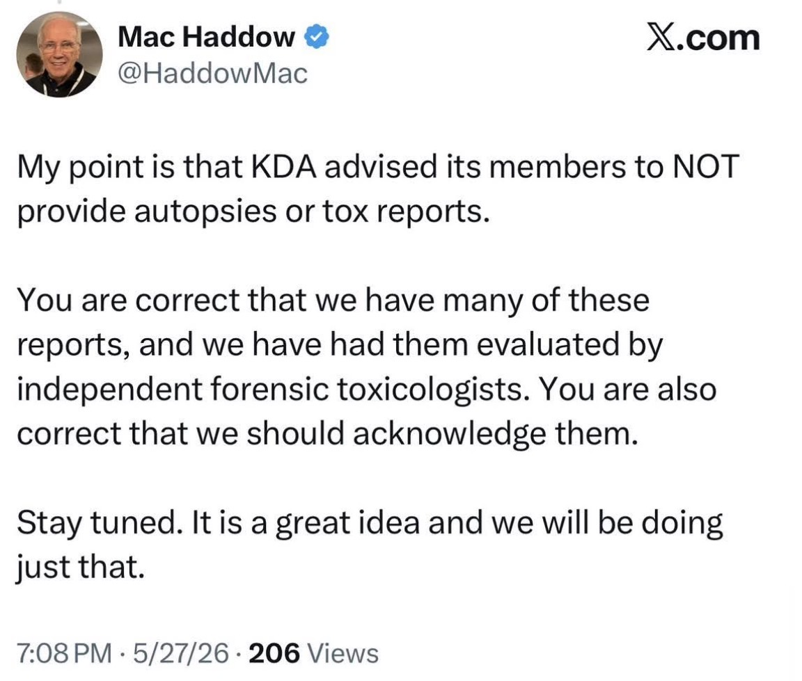

Show the Diagnosis. Show the Treatment History. Show the Records.
Legislators are repeatedly asked to trust personal testimony that kratom treated chronic pain, anxiety, PTSD, depression, opioid use disorder, or another serious medical condition.
But testimony is not the same thing as medical evidence. If a person is asking lawmakers to keep kratom legal because it allegedly treated a disease, then lawmakers deserve to see documentation supporting that claim.
Show the diagnosis. Show the prior treatment failures. Show the physician notes. Show the objective improvement. Show whether a licensed healthcare provider recommended kratom, monitored kratom use, or documented kratom as an appropriate treatment.
If grieving families are expected to produce autopsies and toxicology reports, then pro-kratom witnesses should be willing to submit medical documentation to the legislators, boards, and committees they are trying to influence.
A Question for Legislators
- How many medical records have you personally reviewed where a licensed physician or healthcare provider explicitly recommended kratom?
- How many patient charts have you seen where a doctor documented that kratom successfully treated a disease?
- How many medical records have you reviewed showing objective improvement attributable to kratom?
- How many healthcare providers have testified under oath that kratom should be used as a treatment for a medical condition?
- How many kratom “success stories” have been independently verified through medical documentation?
The answer is likely very few, if any.
Yet lawmakers are routinely asked to base public policy on anecdotal testimony from individuals claiming medical benefits that have never been independently verified.
What Does the Published Medical Literature Show?
There are no widely accepted peer-reviewed clinical case reports showing that kratom safely and effectively treated a disease under medical supervision.
By contrast, the medical literature contains more than one hundred published case reports and case series describing harms associated with kratom exposure, including:
- Dependence and withdrawal
- Liver injury
- Seizures
- Psychosis
- Neonatal withdrawal
- Cardiac complications
- Respiratory depression
- Serious poisonings
- Fatal intoxications
If personal testimony is enough to prove benefit, why are advocates demanding medical records, autopsies, and toxicology reports when the outcome is harm?
Submit Your Proof to Legislators
Anti-Kratom Association is not collecting private medical records.
This campaign asks pro-kratom advocates, industry representatives, and public witnesses to submit their medical documentation directly to the legislators, regulatory boards, city councils, and committees they are attempting to influence.
If kratom is being promoted as medicine, lawmakers should ask for medical evidence.